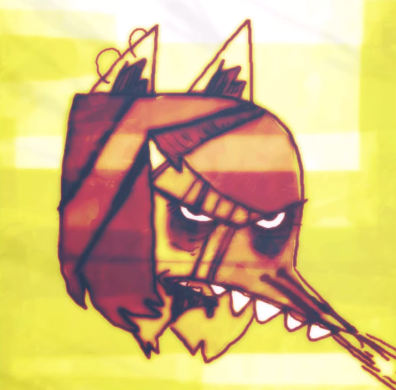

car seat headrest
csh is my top band right now, especially the older songs. they made their old songs in a car (hence the name) so it all sounds a bit crusty, but in that way it makes it feel real. the voice cracks, the imperfections, the unpolishness screams human and it screams loser, and we're all losers.
top songs: something soon, drunk drivers/killer whales, death at the movies, nervous young inhumans
top songs: something soon, drunk drivers/killer whales, death at the movies, nervous young inhumans
indie rock